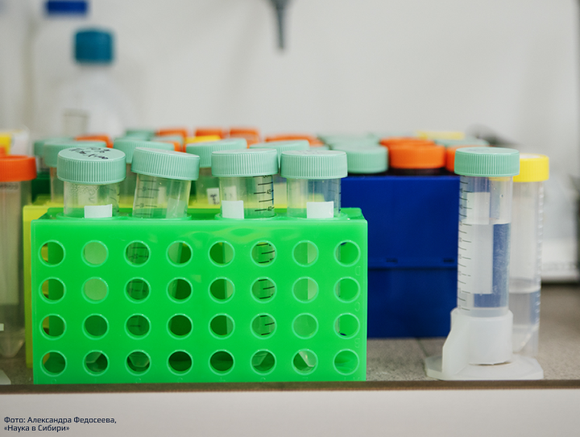

ХИРШ В СИБИРИ.
РЕЙТИНГ ЦИТИРУЕМОСТИ СОТРУДНИКОВ СО РАН
Академика Лаврентьева, 17
Как ученые со всего мира ссылаются на работы исследователей Сибирского отделения РАН
Проект Академгородка был создан в 1957 году Михаилом Лаврентьевым. Он же возглавил Сибирское отделение
Академии Наук. Институты, уединенные от городской суеты, решали самые разные научные задачи.
С распространением интернета мир науки стал объемнее. Появилась возможность мгновенно делиться
результатами исследований и открыто сотрудничать из разных точек планеты. Но сначала их результаты
должны быть опубликованы в признанных научных журналах. Trails рассказывает о самых цитируемых работах
ученых из Сибири.
Физики-ядерщики и коллайдеры
В 2005 году аргентино-американский физик Хорше Хирш предложил научному сообществу алгоритм измерения
продуктивности исследователей. Индекс рассчитывается на основе количества публикаций ученого и
количества цитирований этих работ. Такой показатель был создан для более адекватной оценки деятельности
исследователя и отражал внимание к его работам со стороны научного сообщества.
По данным корпуса экспертов естественных наук (далее — КЭЕН) на 1 декабря 2020-го среди 7,5 тысяч
российских исследователей, которые имеют этот показатель, 563 ученых работают в институтах СО РАН.
Пресс-служба Института цитологии и генетики считает, что ресурс содержит неполную информацию, так как не
включает импакт-фактор экспертов российских научных фондов.
Эксперименты на коллайдере ВЭПП-2000 позволят обнаружить признаки
существования Новой физики, то есть
явлений, не описанных в Стандартной модели.
Так или иначе, по информации РИНЦ (Российский индекс научного цитирования) и КЭЕН самый большой
показатель индекса среди сибирских ученых имеет главный научный сотрудник Института ядерной физики СО
РАН Семён Эйдельман. Он участвует во многих международных коллаборациях по изучению физики элементарных
частиц, в том числе экспериментах коллайдера ВЭПП-2000 ИЯФ СО РАН. Это единственная в мире установка,
работающая с круглыми пучками, которые позволяют в разы увеличить показатели эффективности коллайдера.
Её основная цель — измерение адронных сечений в электрон-позитронной аннигиляции или, проще говоря,
вероятность рождения сильновзаимодействующих частиц при столкновении электронов и позитронов. Кроме
того, эксперименты на коллайдере ВЭПП-2000, возможно, позволят обнаружить признаки существования Новой
физики, то есть явлений, не описанных в Стандартной модели.
Сейчас специалисты Института ядерной физики планирует создать новый коллайдер — Супер С-Тау фабрику,
которая понадобится для экспериментов по изучению тау-лептонов и очарованных кварков. По расчетам
разработчиков, новый коллайдер будет иметь лучшую производительность среди установок такого класса.
Один из инициаторов создания супер чарм-тау фабрики — заведующий лабораторией ИЯФ Юрий Тихонов. У него
пятый по количеству индекс Хирша среди сибирских ученых по информации КЭЕН на декабрь 2020 года. В ИЯФ
Тихонов руководит группой экспериментаторов элементарных частиц на детекторе АТЛАС — большом
универсальном детекторе частиц на Большом адронном коллайдере в ЦЕРН.
Детектор АТЛАС разработан для измерения самого широкого диапазона сигналов от рождения и распада частиц.
В экспериментах с детектором АТЛАС на LHC при непосредственном участии Юрия Тихонова был открыт бозон
Хиггса, а также получен целый ряд других фундаментальных результатов в физике элементарных частиц.
По состоянию на август 2008 года, коллаборация детектора АТЛАС насчитывала 2100 ученых из 167 научных
организаций 37 стран мира. С российской стороны в эксперименте принимают участие сотрудники сразу
нескольких организаций: ОИЯИ в Дубне, ИТЭФ, ФИАН, НИИЯФ МГУ, МИФИ в Москве, ИФВЭ в Протвино, ПИЯФ в
Санкт-Петербурге, ИЯФ СО РАН в Новосибирске.
В экспериментах на БАК группа Тихонова ищет массивные нейтрино — фундаментальные частицы, за обнаружение
существования массы которых Такааки Кадзита и Артур Макдональд получили Нобелевскую премию по физике в
2015 году.
В 2012 году Юрий Тихонов и Александр Король (второй по h-индексу в ИЯФ по данным КЭЕН в 2020 году)
приняли участие в поиске бозона Хиггса в протон-протонных столкновениях. Это исследование цитировали
почти 6 тысяч раз по данным базы цитируемости Scopus на 2020 год.
Гликогеномика и анализ биоданных
Система измерения продуктивности по цитированиям имеет свои недостатки. Например, публикации в
узкоспециализированных областях математики цитируются значительно реже. «Математический логик может
иметь в 15 раз меньше цитирований, чем специалист того же уровня, работающий в динамических системах,
комплексном анализе или математической статистике», — говорит президент Московского математического
общества Виктор Васильев.
Пресс-секретарь института цитологии и генетики уточняет, что каждый сотрудник учреждения имеет h-индекс.
Самый высокий импакт-фактор у Юрия Никитина, основателя медицинской школы исследований в России по
проблемам атеросклероза, сердечно-сосудистых заболеваний и других хронических неинфекционных
заболеваний, нарушений липидного обмена. Он один из первых в стране изучил роль тканевых компонентов (в
частности, сосудистой стенки) в гемостазе и свертывании крови.
После него по высоте индекса Хирша следует заведующий лабораторией гликогеномики Юрий Аульченко.
Сотрудники лаборатории изучают генетический контроль гликозилирования белков человека и связь
гликозилирования с развитием заболеваний.

метод может заменить химиотерапию, если изучить геном человека и
подобрать на основе данных
индивидуальное лечение.
Исследователи выяснили, что способ крепления сахара к белку может повлиять на развитие болезни. Если
убрать некоторые белки или отредактировать форму гликана, то можно создать терапевтический эффект для
таких заболеваний, как воспаление желудочно-кишечного тракта, ревматоидный артрит, астма, аллергия,
цирроз печени и болезнь Паркинсона. В перспективе этот метод может заменить химиотерапию, если изучить
геном человека и подобрать на основе данных индивидуальное лечение.
Подобное изучение проводится с помощью статистического анализа биологических данных. Одна из самых
цитируемых работ Аульченко, построенных по такому принципу — участие в изучении биологической,
клинической и популяционной значимости 95 локусов для липидов крови.
Эти локусы изменяют липидные характеристики, которые могут повлиять на фактор риска ишемической болезни
сердца. Как утверждает группа ученых, результаты исследования обеспечивают основу для развития более
широкого биологического понимания метаболизма липопротеинов и выявления новых терапевтических
возможностей для профилактики ИБС. Эту работу цитировали почти 2,5 тысячи раз.
Цитируемость — это не всегда объективный способ оценить вклад ученого в науку. Многие авторы указывают,
что h-индексом можно манипулировать, создавать видимость бурной работы и поддерживать связь с коллегами,
которых взаимно цитируешь. Сам создатель индекса Хорхе Хирш говорит, что нужно не оценивать ученых по
метрикам, а изучить суть их исследований, прочитать статьи и оценить весь багаж знаний, иначе можно
допустить большую ошибку.
В то же время специалист по наукометрии Павел Касьянов отмечает, что наукометрия существует не для
принятия решений в области управления наукой, а для поиска научных публикаций по интересующей тематике и
проведения исследований.